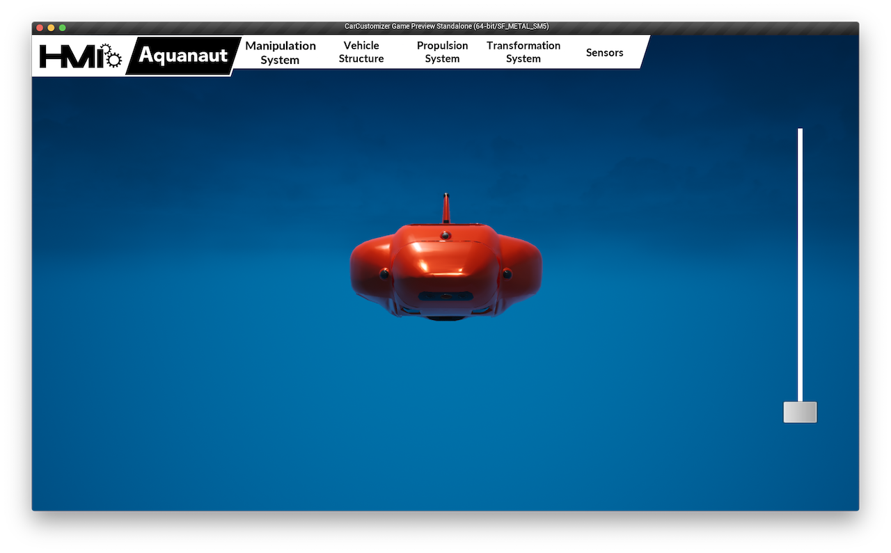
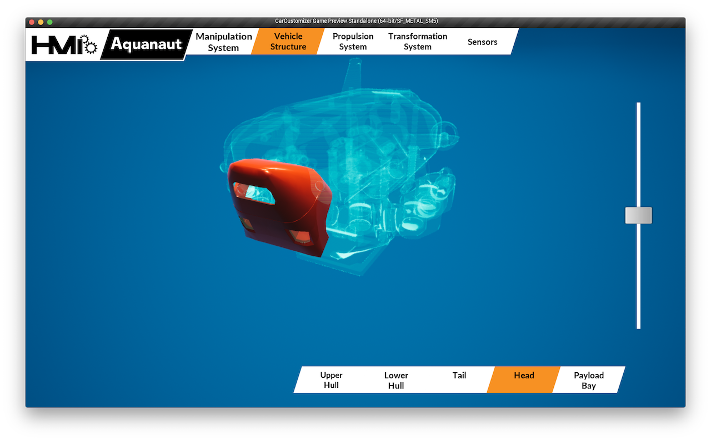
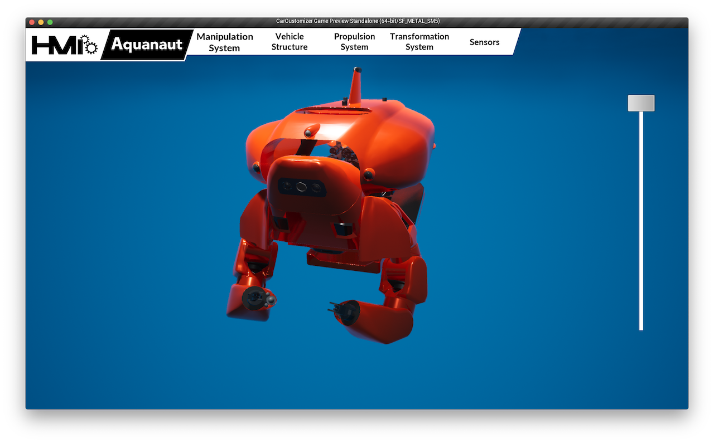

AquanautViz
- Client: Houston Mechatronics, Inc.
- Date: February 2018
- Service: 3D Game Design and Development
- Tools: Unreal Engine, C++, Maya, Adobe CC, HTC Vive
A 3D Game Development Project
AquanautViz was originally a research project aiming for the revolutionary user interface for controlling the subsea robot of Houston Mechatronics, Inc (HMI). It is totally developed in one of the widely used game engines - Unreal Engine. The 3D models are built using Maya and Solidworks. The project was deployed in the iOS platform and first presented as an interactive demonstration of our robot in 2018 Offshore Technology Conference (OTC). The app was so successful and gained high praises from our clients, therefore, we extended it into the virtual reality environment in HTC Vive in later 2018 as marketing material.
First comes the demonstration video of the application. (Noted that the video is recorded in Mac OS, the application works on other platforms as well such as iOS, PC, HTC Vive.)
3D Modeling
The 3D models of the whole robot are built in Solidworks by mechanical and electrical team. The good news is Solidworks is able to export 3D models in a format Maya uses such as STL, STEP, fbx(fbx is better because it also includes material and UV mapping). But the bad news is all the polygon surfaces in these exported files are composed of too many triangles which cause millions of vertices and small surfaces. Even worse, the number accumulates greatly when you have a complete 3D robot to assemble. The solution is simple enough. I used two weeks to remodel everything in Maya. This process is not purely remodeling, but logically and naturally simplify large surfaces using much fewer triangles while maintaining the same level smoothness. These 3D assets are used in other projects and marketing materials as well in the future.
The Interface Design
The design of the interface is focused on simplicity and intuitiveness. It needs to be self-explained and fast responsive. The interface experience is mainly focusing on the interaction between the user and devices. These interactions will be pan, zoom, rotate and tap. The function is kept to be simple and easy.
The main menu is located on the top of the screen for users to tap choose from a set of main systems of the robot.
Once the main system is chosen, the subsystems are popping up from the bottom. Users can then tap to choose the one they are interested in. The visualized 3D robot will response based on the system users choose. The system chosen is rendered in color while the unchosen ones are rendered as holographic.

Users can also use the slider on the screen to transform the robot or pan on the screen to rotate the model. The manipulation is so simple and intuitive that anyone can use it naturally.
As a disclosure, this is the promotional animation created in Unreal Engine and After Effects that was used in conferences. Enjoy!